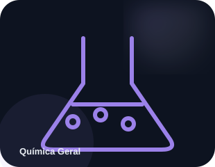
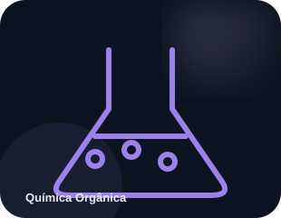
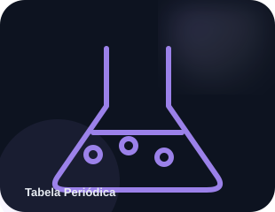

ELEMENTOS · 01
Elementos sintéticos
Elementos muito pesados, como o oganessônio, podem ser produzidos em laboratório e têm núcleos extremamente instáveis.
Conecte matéria, transformações e energia para entender a química do laboratório ao cotidiano.

Modelos atômicos e tabela periódica.
Cálculos de massa, mol e reações.

Cadeias de carbono e funções orgânicas.
Termoquímica, cinética e equilíbrio.
Pilhas, eletrólise e oxirredução.

Propriedades periódicas dos elementos.
Elementos muito pesados, como o oganessônio, podem ser produzidos em laboratório e têm núcleos extremamente instáveis.
Em 1869, Dmitri Mendeleev organizou os elementos conhecidos e deixou espaços para substâncias ainda não descobertas.
O mol representa uma quantidade definida de entidades elementares: 6,02214076 × 10²³ por mol.
Catalisadores alteram a velocidade de uma reação sem serem consumidos de forma líquida no processo global.
A escala de pH é usada para indicar a acidez ou basicidade de soluções aquosas em diferentes condições.
Baterias, medicamentos, alimentos, materiais e processos de limpeza dependem de transformações químicas.
Use a sequência abaixo para transformar leitura passiva em recuperação ativa e prática.
Se você ainda não tem progresso, uma boa entrada é Química Geral. Depois, o VETOR registra seu último tópico para facilitar a retomada.
Começar Química Geral →Não tente memorizar tudo de uma vez. Leia, feche a página e tente reconstruir a ideia com suas próprias palavras. É aí que o estudo começa a virar memória.